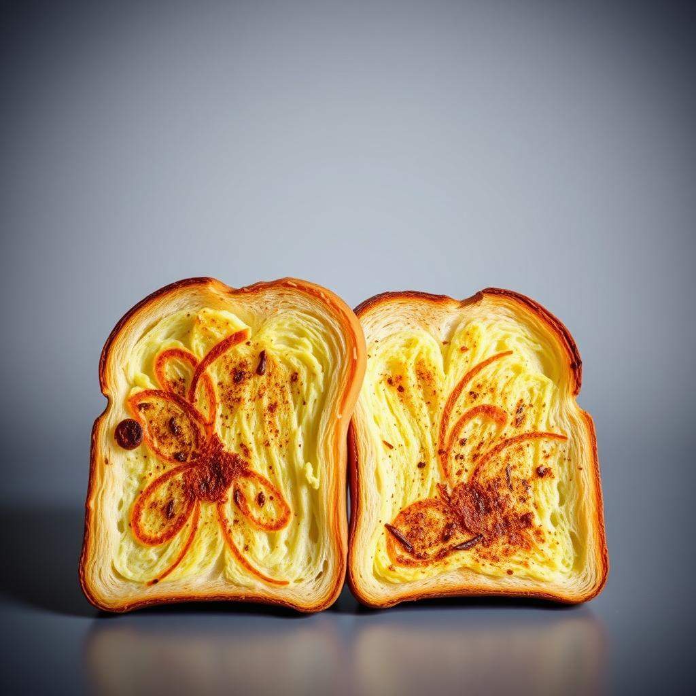
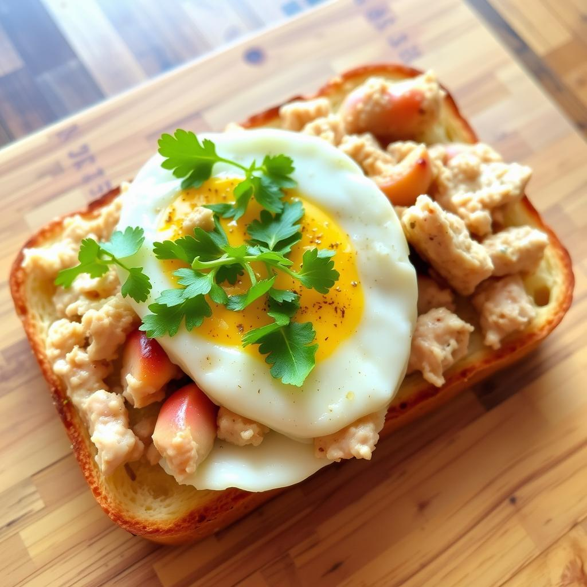

店長溫馨推薦
海鹽牛五花三明治
美味鮮嫩三明治，滿滿肉片與生菜，簡單健康享受

碳烤吐司系列
創意花紋吐司，精緻紋理搭配酥脆口感，視覺味覺雙享受

鮪魚蛋吐司
美味雞肉蛋黃吐司，點綴新鮮香菜葉
商店外觀設計採用 簡約現代 的玻璃窗與深色調，搭配明亮的 品牌招牌，給人乾淨且有質感的印象
夜間時分， 霓虹燈光效 與店內的溫暖照明相呼應，成功吸引路過行人的目光
店內設置 長桌與吧檯式座位，適合小型聚會與個人用餐需求，提供彈性的空間使用
位於市區黃金地段的 綠崗，以現代簡約的設計風格，提供顧客舒適的用餐體驗。店面外觀採用 大片玻璃窗，搭配簡潔醒目的品牌招牌，讓人一眼就能注意到這間充滿質感的早午餐店。夜間時分，店內溫暖的燈光與招牌的霓虹光效相互輝映，成為街頭一抹亮麗的風景。 綠崗堅持打造 質感與美味兼具的早午餐，從食材選用到每一份餐點的製作，都秉持高標準，致力於給顧客最安心的享受。菜單設計多元豐富，從經典吐司、牛角麵包到精緻的輕食沙拉，滿足各種顧客的口味需求。此外，搭配店內香醇的現煮咖啡及特製飲品，更能讓每一位顧客在忙碌的生活中，找到片刻的寧靜與放鬆。 內部空間採用 工業風設計，以裸露紅磚牆、木質桌椅及金屬燈飾打造出時尚又溫馨的氛圍。店內設有長桌、吧檯及獨立座位，無論是三五好友聚會、情侶約會，或是個人獨自放鬆，都能找到最適合的位置。開放的空間設計讓顧客能自在交流，而專業且親切的服務，更是綠崗深受喜愛的原因之一。 作為現代人最愛的早午餐品牌，綠崗不僅提供美味餐點，還注重 顧客的用餐體驗 與 品牌形象，是您放鬆心情、享受美食的最佳選擇。歡迎每一位顧客前來體驗，讓 綠崗 成為您生活中的美好日常。
美味鮮嫩三明治，滿滿肉片與生菜，簡單健康享受
創意花紋吐司，精緻紋理搭配酥脆口感，視覺味覺雙享受
美味雞肉蛋黃吐司，點綴新鮮香菜葉